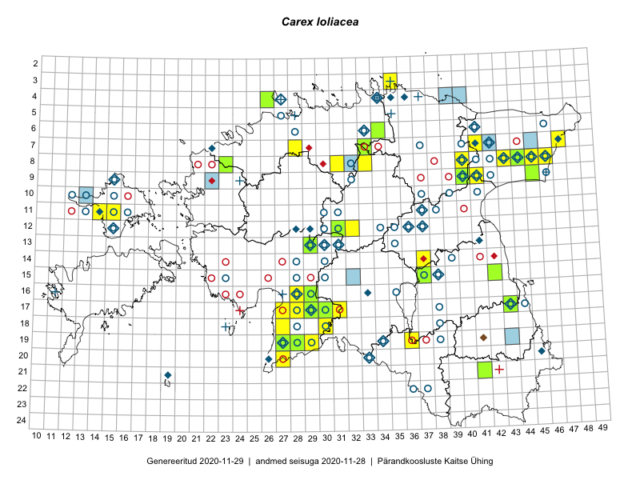

Carex loliacea
Uuendatud: 2016-12-08
Kaardile koondatud taksonid: Carex loliacea L.

Kaart põhineb 35 kirjel, neist vaatlusi 32 ja eksemplare 3. Taksonit on leitud 24 ruudust.
| Ruut | Vaatleja(d) | Vaatlusaeg | Kirje tüüp | Viide andmebaasikirjele |
|---|---|---|---|---|
| 16-29 | Peedu Saar, Liina Oja | 2015-06-11 | ruut/ala | vaata PlutoFis |
| 08-45 | Peedu Saar, Liina Oja | 2015-07-22 | ruut/ala | vaata PlutoFis |
| 08-43 | Thea Kull, Eerik Leibak | 2016-07-24 | ruut/ala | vaata PlutoFis |
| 17-30 | Ott Luuk, Hannes Pehlak | 2015-06-11 | ruut/ala | vaata PlutoFis |
| 17-43 | Thea Kull, Eerik Leibak | 2015-07-05 | ruut/ala | vaata PlutoFis |
| 08-46 | Thea Kull, Eerik Leibak | 2015-07-23 | ruut/ala | vaata PlutoFis |
| 07-41 | Thea Kull, Eerik Leibak | 2015-09-10 | ruut/ala | vaata PlutoFis |
| 07-41 | Thea Kull, Meeli Mesipuu | 2015-09-10 | punkt | vaata PlutoFis |
| 24-40 | Eeva-Maria Jeletsky, Tarmo Niitla | 2015-07-26 | ruut/ala | vaata PlutoFis |
| 08-33 | Erkki Otsman, Sergei Smirnov | 2015-07-02 | ruut/ala | vaata PlutoFis |
| 19-27 | Thea Kull | 2014-08-28 | ruut/ala | vaata PlutoFis |
| 19-27 | Thea Kull | 2014-08-28 | punkt | vaata PlutoFis |
| 17-29 | Meeli Mesipuu, Timo Luhamäe | 2015-06-09 | ruut/ala | vaata PlutoFis |
| 17-29 | Meeli Mesipuu, Timo Luhamäe | 2015-06-09 | punkt | vaata PlutoFis |
| 13-29 | Meeli Mesipuu, Timo Luhamäe | 2015-06-10 | ruut/ala | vaata PlutoFis |
| 17-29 | Timo Luhamäe, Meeli Mesipuu | 2015-06-09 | punkt | vaata PlutoFis |
| 13-29 | Timo Luhamäe, Meeli Mesipuu | 2015-06-10 | punkt | vaata PlutoFis |
| 18-35 | Helle Mäemets, Mare Leis | 2015-06-24 | ruut/ala | vaata PlutoFis |
| 16-29 | Indrek Tammekänd | 2016-06-07 | ruut/ala | vaata PlutoFis |
| 19-36 | Peedu Saar, Tarmo Niitla | 2016-06-14 | ruut/ala | vaata PlutoFis |
| 09-41 | Ott Luuk, Eerik Leibak | 2016-08-05 | ruut/ala | vaata PlutoFis |
| 16-29 | Thea Kull, Hannes Pehlak | 2016-07-20 | ruut/ala | vaata PlutoFis |
| 12-32 | Thea Kull, Raivo Kalle, Susanna Vain | 2016-07-21 | ruut/ala | vaata PlutoFis |
| 11-15 | Thea Kull, Peedu Saar | 2016-08-09 | ruut/ala | vaata PlutoFis |
| 12-32 | Thea Kull, Raivo Kalle, Susanna Vain | 2016-07-21 | punkt | vaata PlutoFis |
| 11-14 | Thea Kull, Peedu Saar | 2016-08-09 | punkt | vaata PlutoFis |
| 12-31 | Aat Sarv, Indrek Tammekänd | 2016-07-22 | ruut/ala | vaata PlutoFis |
| 11-14 | Peedu Saar, Thea Kull | 2016-08-09 | ruut/ala | vaata PlutoFis |
| 16-28 | Indrek Tammekänd | 2016-08-27 | punkt | vaata PlutoFis |
| 18-27 | Indrek Tammekänd | 2016-08-27 | punkt | vaata PlutoFis |
| 08-31 | Toivo Sepp, Peedu Saar | 2016-07-18 | ruut/ala | vaata PlutoFis |
| 09-41 | Ott Luuk, Eerik Leibak | 2016-08-05 | punkt | vaata PlutoFis |
| 16-29 | Peedu Saar, Liina Oja | 2015-06-11 | eksemplar | vaata PlutoFis |
| 08-23 | Ott Luuk | 2012-07-18 | eksemplar | vaata PlutoFis |
| 09-45 | Mare Leis | 2015-07-01 | eksemplar | vaata PlutoFis |